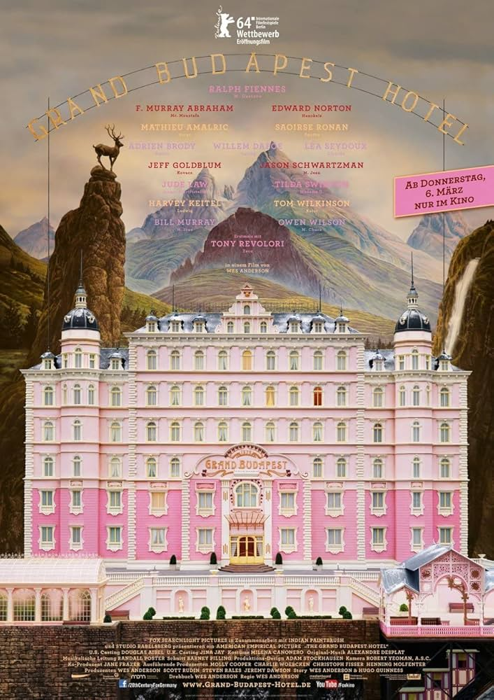
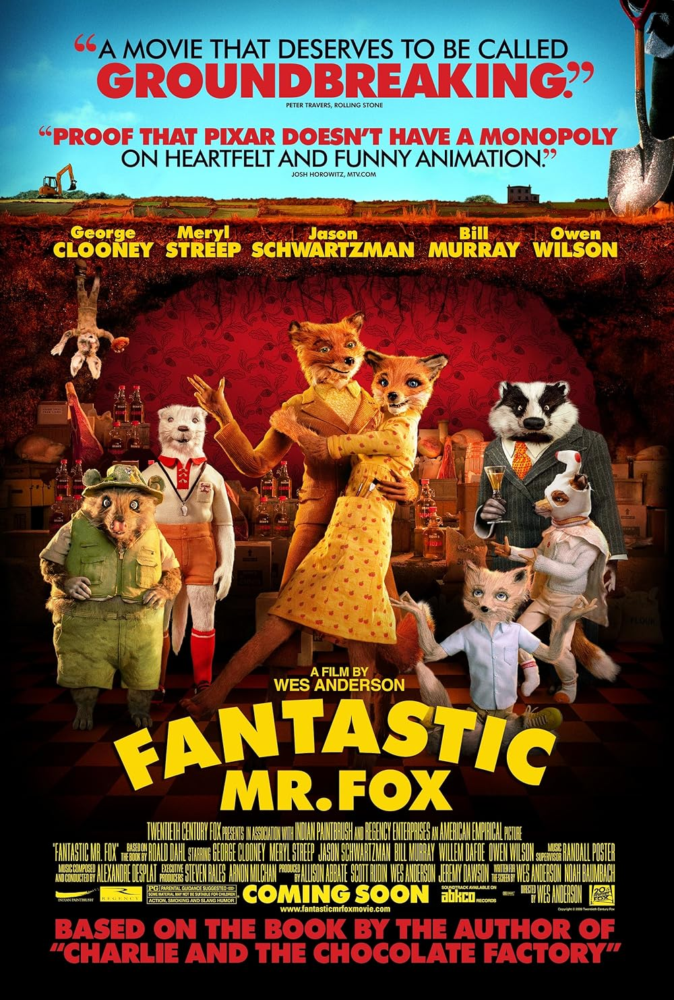
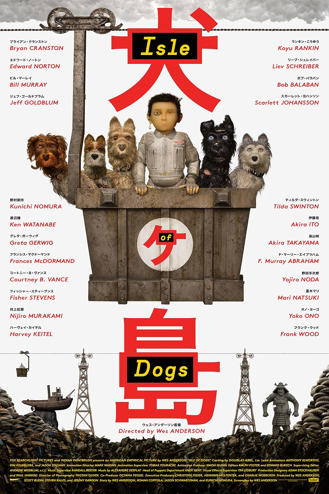

Wes Anderson
The Grand Budapest Hotel

Año: 2014
Duración: 1h 39min
Puntuación: 8,1 / 10
Sinopsis: Relata las aventuras de Gustave, un legendario conserje en un hotel de la ficticia República de Zubrowka, y Zero Moustafa, el chico del lobby que se convierte en su amigo más confiable.
Estrellas: Ralph Fiennes, F. Murray Abraham, Mathieu Amalric
Anécdota: La escena donde Ludwig abofetea a Zero se grabó 42 veces.
Premios: Ganó 4 premios Óscar.
Fantastic Mr. Fox

Año: 2009
Duración: 1h 27min
Puntuación: 7,9 / 10
Sinopsis: Un zorro vuelve a robar granjas y provoca una guerra con los granjeros.
Estrellas: George Clooney, Meryl Streep, Bill Murray
Premios: Nominada a 2 premios Óscar.
Isle of Dogs

Año: 2018
Duración: 1h 41min
Puntuación: 7,8 / 10
Sinopsis: Ubicada en Japón, Isle of Dogs sigue la odisea de un niño en busca de su perro perdido.
Estrellas: Bryan Cranston, Koyu Rankin, Edward Norton
Anécdota: Wes Anderson organizó un concurso benéfico para que una persona pudiera participar como voz en la película.
Premios: Nominada a 2 premios Óscar, 34 premios ganados y 95 nominaciones.
The Royal Tenenbaums

Año: 2001
Duración: 1h 50min
Puntuación: 7,6 / 10
Sinopsis: Los excéntricos miembros de una familia disfuncional vuelven a reunirse bajo el mismo techo.
Estrellas: Gene Hackman, Gwyneth Paltrow, Anjelica Huston
Anécdota: La mano con la BB incrustada pertenece realmente al hermano de Owen Wilson.
Premios: Nominada a 1 premio Óscar, 11 premios ganados y 46 nominaciones.